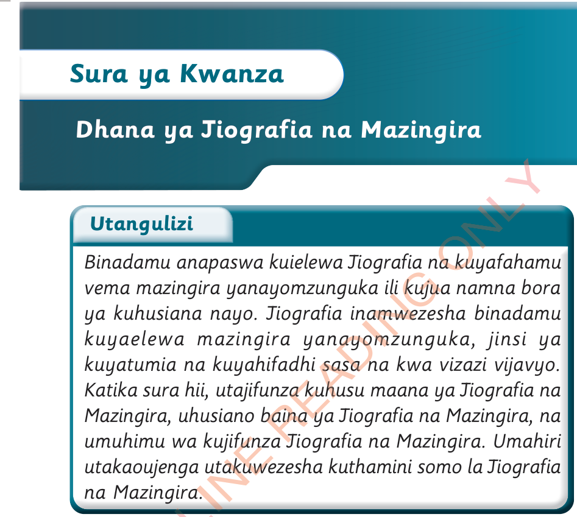

Sura ya Kwanza
Dhana ya Jiografia na Mazingira
Utangulizi
Binadamu anapaswa kuielewa Jiografia na kuyafahamu vema mazingira yanayomzunguka ili kujua namna bora ya kuhusiana nayo.Jiografia inamwezesha binadamu kuyaelewa mazingira yanayomzunguka, jinsi ya kuyatumia na kuyahifadhi sasa na kwa vizazi vijavyo.Katika sura hii, utajifunza kuhusu maana ya Jiografia na Mazingira, uhusiano baina ya Jiografia na Mazingira, na umuhimu wa kujifunza Jiografia na Mazingira.Umahiri utakaoujenga utakuwezesha kuthamini somo la Jiografia na Mazingira.
Fikiri
Vitu vinavyomzunguka binadamu